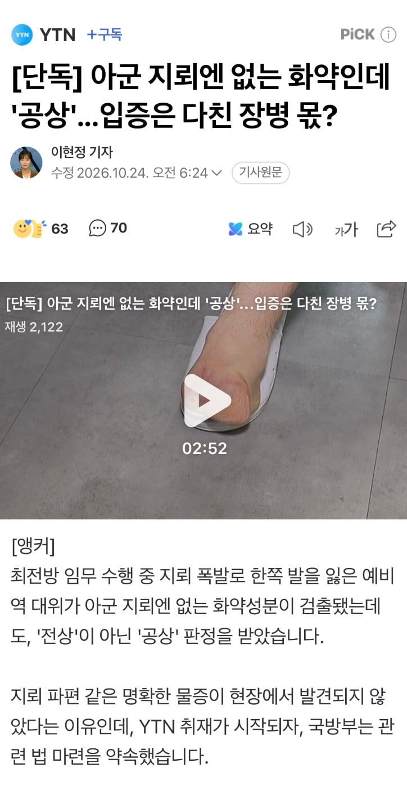

"취재가 시작되자"

"취재가 시작되자"
쟤들은 취재시작되면 바꾼다 말만하고 안 바꿀 놈들임
"군은 아주 고질적인 나쁜 버릇이 있어요. 30초 뒤에 들통 날 거짓말도 일단 하고 보자." - 군인권센터 소장 임태훈
안걸리면 FM이다.를 훈련병부터 꼭대기까지 하는 곳.ㅋㅋ
빨게없어서 임태훈을 ㅋㅋ
전상(戰傷): 적과 교전, 무장폭동 또는 반란을 진압하기 위한 행위, 전투 또는 이에 준하는 직무수행 중 부상을 입거나 사망한 경우
공상(公傷): 국가수호·안전보장 또는 생명·재산 보호와 관련된 직무수행이나 교육·훈련 등의 상황에서 부상을 입은 경우
전상군경에게는 매월 소액의 전상수당이 추가로 지급되나, 공상군경에게는 전상수당이 지급되지 않습니다.
이새끼들 설마 돈때문에?
교전한게 되어버리니까 옳그떠 눈치보는거 아님?
ㅇㄱㄸ는 대명사처럼 쓰는게 아닙니다
적이 지뢰가 매설되어 있을지 모르는 곳을 지키고 순찰하다 입은 부상인데 당연히 전상이어야 하는 거 아니냐? 개새끼들 진짜
전투 또는 이에 준하는 임무수행이 있으니 전상 이 맞다고 생각하는데 국가수호·안전보장와 관련된 직무수행 쪽으로 넣으면 공상이 맞다고 우길 건덕지가 있을거같긴함. 아마도 그걸 걸고 넘어지는 중이겠지?
관련 법 제정 약속 한다는 거 보면
지금 법적 기준이 안 맞다는 얘기인가?
원래 한국은 떼법이 더 높음
보훈 꼬라지가 이지랄인데 전쟁나면 퍽이나들 나가서 싸우려고 하겠다
공상은 그래도 해주긴했네..
보통은 공상도 안해주려고 소송건다..
나도 공상으로 한 2년 소송해봐서 안다 결국 이기긴했는데 ㅋㅋㅋ
지뢰에 발목이 날라갔는데 안해줄수가있음?
그럼 전상을 안해주는건 정상이고?
그리고 안해준다 한적 없는데..
소송 걸수 있다는거지 최대한 안해주려고
지뢰 밟음?
공상 처리기준에 지뢰 이외에도 많아....
요새들어 왤케 문맥 못읽는애들이 많은거같지
기준에 부합하더라도 안해준다는게 아니라
안하려고 기본적으로 소송한번 걸어보는게 일반적인 상황인데
이번건은 공상은 그래도 소송없이 해줬다는거잖아
지뢰밟았는데 공상이라도 해줘서 다행이다 라는 말을하길래 물어본거야
그래서 너는 뭐로 공상 받았냐고
지뢰랑 본인이야기를 비교하길래
내가 언제 다행이라고 했냐?
소송 안가고 바로 해줬다고 했지..
보통 공상처리도 남들이 보기엔 확실해 보여도 담당자가 더 확실한 근거 마련을 위해 소송 1번은 하고
거기서 질경우 그걸 근거로 공상 처리를 하는데
이번 케이스는 그런 절차 없이 바로 공상처리해서
그말을 한건데
내가 뭔사유로 공상처리했든 뭔상관인지 모르겠고
그 질문을 지뢰밟음? 이라고 하는게 맞나 모르겠네 ㅋㅋㅋㅋㅋㅋㅋㅋ
공상은 그래도 해주긴했네..
보통은 공상도 안해주려고 소송건다..
니가 이랬잖아
보통은 개병신 집단이네 공상이 말이되냐 ? 로 시작해야하는데
공상은 그래도 해주긴 했네.. 이러니까 물어본거지 너도 비슷한 케이스로 공상이라도 받아냈냐고
내 위에 개붕이도 지뢰에 발목 날아갔는데 안줄수가 있냐고 그러잖아
내가 왜 무조건 그 템플릿으로 말해야함?
공상도 보통 소송은 갔다가는데 이번에는 그냥 바로 해줬으니까 하는말이지..
그리고 그걸 떠나서
지뢰밟음? 이건 시비로 밖에 안보인다
지뢰 밟음? 그냥 지뢰 밟고 힘들게 2년 소송해서 공상 받아냈냐고 물어본거라고 니가 최대한 안받아준다며 이게 개병신같은 일이니까 물어본건데 왜 너는 시비로 받아서
문맥을 못읽네 어쩌네 공격적이냐?
지뢰만 공상 처리받는게 아닌데 왜 지뢰에 꽂혔는지 모르겠네..
네가 억지부리는게 아니라
내가 지뢰밟았을거라 생각해서
그 질문을 한거면 사과한다 ㅋㅋㅋㅋ
내가 지뢰밟았다는 뉘앙스도 풍긴적이 없는데 이걸 어떻게 그렇게 이해하지 ㅋㅋㅋ
지뢰밟은사람이 대한민국에 얼마나있겠냐 대부분 다른이유로 공상처리 받지 ㅋㅋㅋㅋ
행복한 주말 되시길
공상은 딱히 혜택이 없어서 체육대회 하다가 다리부러져도 처리해주는데
어떻게 다쳤길래 공상 인정에 2년간 소송까지 걸림?
날아
맞음 보훈처 자기들에게는 존내관대함.
요즘 나오는 닥터x 국방부버전으로 도입해도 똑같을듯
그 럼 전 쟁 이 라 도 하 라 는 거 임 ?
이게 산업재해당한 노동자들이나 가습기살균제 피해자들에게도 비슷한 사태가 터졌었는데
'피해자'가 자신의 피해사실, 피해가 일어난 이유와 당시 피해를 끼친 물질의 성분등을 입증해야만 보상받을수 있는 분위기가 너무 만연해있음.
이번에 부상입으신 군인분들이나, 사회적으로 무고한 피해자가 많은 산업/화학재해는 좀 담당부처가 책임지고 피해입증을 대신해야한다고 봄
아 썸네일 혐짤 좀
군대에서만 왜 유독 이런 논란이 발생하는지 이해하지 못하는 사람들이 있는데,
군인문화가 깊게 침투한 조직일수록 "돈 안받고 초과근무" , "일하다 금전적 손실을 봐도 돈 이야기 안하기" , "어지간히 다쳐도 공상같은거 신청 안하기" << 이런 행동을 애국이라고 생각하고 조직에 대한 충성심이라고 생각함.
군대가 다른 공무원 조직에 비해 애국심은 확실히 뛰어남.
근데 그 애국심을 표현하는 방법은 너무 잘못되었음
그 이유는 군대는 여전히 흑백논리, 획일적 사고방식에 젖어있음. 거기에 기름을 붙는게 철저한 상명하복이고
궁금한게 최대한 적게 등록하면 포상 받거나 많이 등록하면 징계받나?
이것도 쉴드칠 사람이 나올까
위에 있네
저 씨발럼들은 대체 언제 바뀌는 걸까
전방에서 오물풍선 날라온거 회수작전 하다 떨어져서 다치면 전상 공상?
오물풍선에 뭐가있냐에 따라 다르겠지?
날아온
이렇게보면 진짜 군에 빨갱이들 얼마나 있을지 상상도 안됨
시발 ㅋㅋㅋ 참..
안해주는 이유가 뭐임? 안해주는게 실적에 도움되는거?
실적에 도움되는게 아니라 저거 처리 하는 입장에서 바로 승인해주면 테클걸릴게 있어서 그럼
너가 담당자고 바로 승인해줄경우
무슨 근거로 승인해줬냐? 이런식으로 테클걸릴 건덕지가 있음.
근데 불승인해서 유족이랑 법적 소송간 다음에
유족이 이기고
그걸 근거로 전상 처리하면 담당자 입장에서도
소송결과를 근거로 전상처리 하면 일처리가 깔끔해지거든...
그게 잘했다는게 아니라 그렇게 많이 일처리 한다고 써놓은건데
위에 그걸로 시비거는 놈들이 좀 많네...
그게 잘했다는거도 아닌데
뭘 지키냐 그냥 쳐망해버리자
끌고온 병사한테 임무를 부여해서 위험지역을 돌게했는데 왜 공상이야 미친새끼들아
이야 이번 윗분들 대처는 진짜 상상을 초월하는구나
개시발